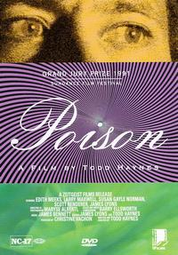

Poison

Todd Haynes
1991
85 minutes
Wikipedia link
IMDB link
This is text.
Time to choose something different:
- At least those prisoners had each other to keep themselves entertained. Solitary confinement can be pretty rough on a young man. - Turn to section 15
- The kid flying away reminded me of Peter Pan. Let's watch that next--or the closest thing to it that you have, I guess... - Turn to section 245
- The pastoral scenes were nice, but those juvenile delinquents would be better suited for adventures in the wild if they had been doing boy scouting instead of committing crimes! - Turn to section 197